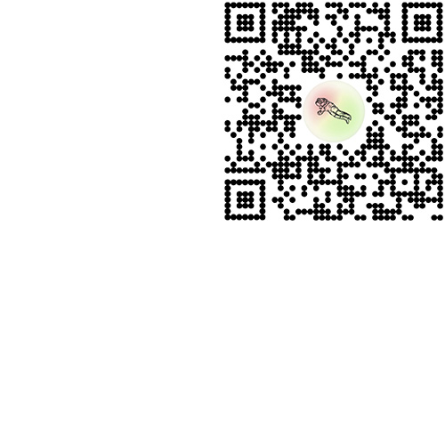
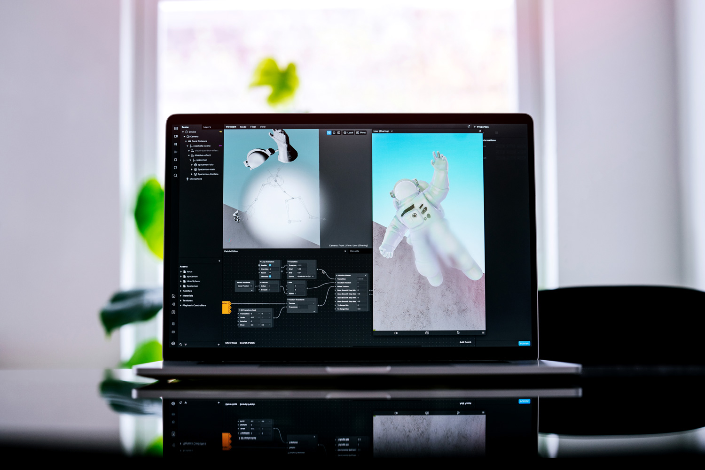

COACHELLA / THIRD CONTACT IN NYC
AR. Space (2022)
Following a two-year hiatus, the Coachella Valley Music and Arts Festival welcomed fans back via a virtual gateway called the “Coachellaverse.”
Third Contact in NYC was one of the five immersive, geo-anchored AR activations within the Coachellaverse campaign (with others situated in LA, London, Tokyo and Rio), developed in partnership with Coachella and Spark AR to extend and enrich the fan experience to a global scale. Localized based on GPS coordinates, the AR elements are revealed only when the user is physically present at one of the designated landmarks in NYC, including Times Square, Central Park and Little Island. Inevitably, geo-localization grounds the experience in the context of its environment, and in turn allows the environment to acquire new levels of significance.
Production & Engineering Support / Spark AR Team @Meta
Concept, Design & AR Development / Helena Dong
3D Modeling / Simone (AR STudio)
✹ Try Third Contact in NYC
AR. Space (2022)
Following a two-year hiatus, the Coachella Valley Music and Arts Festival welcomed fans back via a virtual gateway called the “Coachellaverse.”
Third Contact in NYC was one of the five immersive, geo-anchored AR activations within the Coachellaverse campaign (with others situated in LA, London, Tokyo and Rio), developed in partnership with Coachella and Spark AR to extend and enrich the fan experience to a global scale. Localized based on GPS coordinates, the AR elements are revealed only when the user is physically present at one of the designated landmarks in NYC, including Times Square, Central Park and Little Island. Inevitably, geo-localization grounds the experience in the context of its environment, and in turn allows the environment to acquire new levels of significance.
Production & Engineering Support / Spark AR Team @Meta
Concept, Design & AR Development / Helena Dong
3D Modeling / Simone (AR STudio)
✹ Try Third Contact in NYC
Having drawn inspiration from the context of the Coachella Astronaut and my own relationship with the sky's transitioning qualities, the underlying intention for Third Contact was to construct a moment in AR that would not only elicit excitement around the festival's return, but could reinforce our appreciation for physical space through the instillment of serene motion and tonal shifts throughout the day.

Documentation / Courtesy of Coachella and Meta